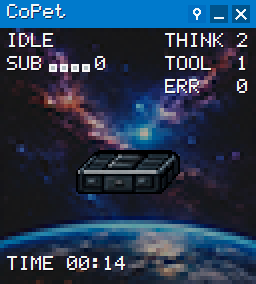

YOUR DESKTOP, A LITTLE MORE ALIVE
Stay in
the flow.
A tiny satellite. A clear signal.
Keep an eye on Codex while you do your thing.
CoPet unfolds when Codex gets to work, follows its tools and subagents, and folds back up when the turn is done.
Windows x64 · Portable ZIP, 82.5 MiB · No .NET install
- Always in view
- Runs locally
- Knows when it's done
MEET YOUR COPILOT01 / CoPet

DEMOReady for the next turn
Actual CoPet 0.4.9 rendering · Synthetic session data
Small satellite.
Plenty to say.
- Thinking
- Using tools
- Subagents
- Done
- Errors
- 01
Unpack & launch
Extract the ZIP and open
CoPet.exe. - 02
Connect to Codex
Select Apply setup, then restart Codex.
- 03
Trust & take off
Open
/hooksin Codex and review and trust the eleven CoPet hooks.